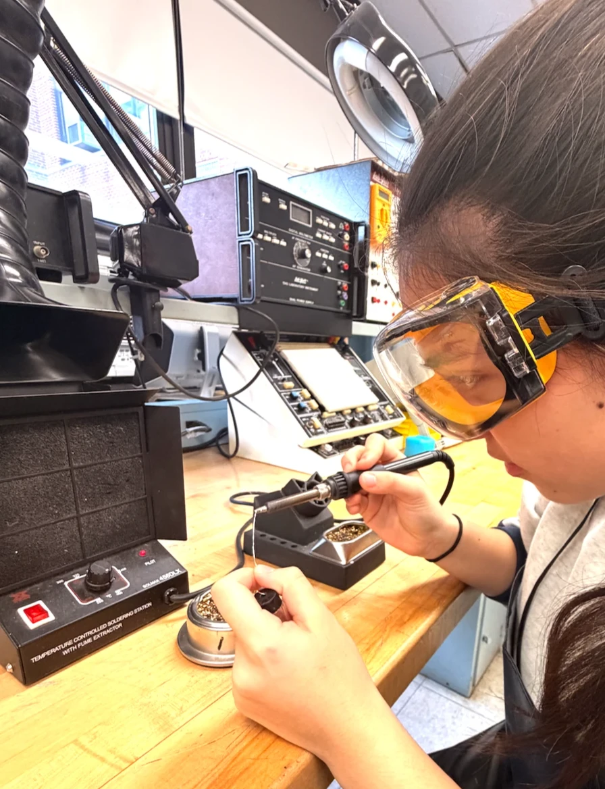
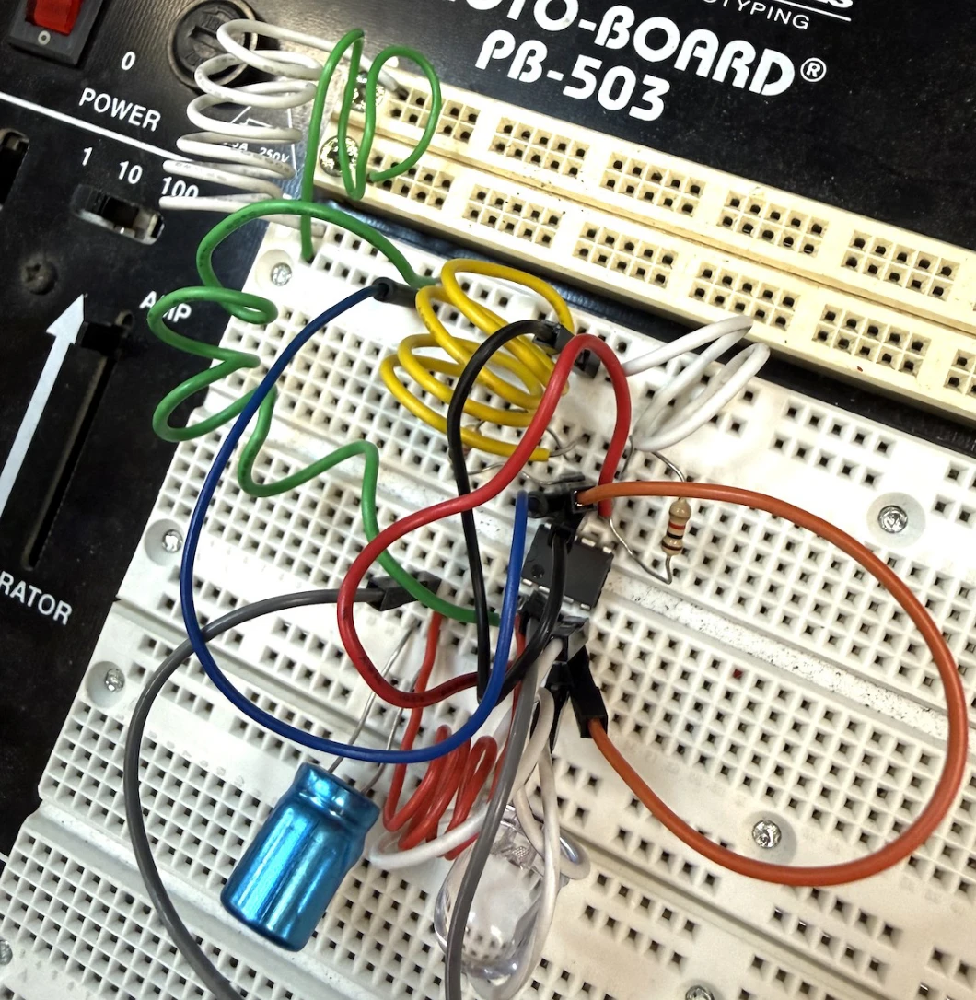
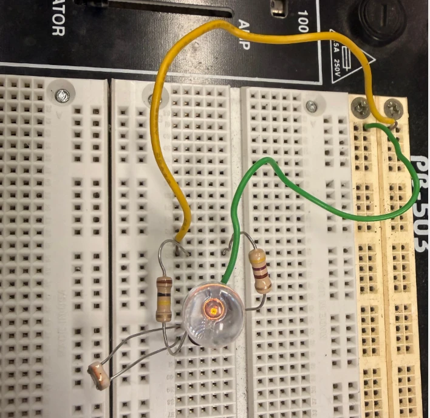

Welcome to my electronics project page. Here are a few examples of hands-on circuit prototyping and experimentation.

Prototyping on a proto-breadboard using a transistor TIP120 and an IC-555 timer to explore timing circuits and switching behavior.

A simple light-activated night light built using a 9V battery, breadboard, photoresistor, transistor BC547, resistor network, and LED. The circuit turns on automatically when the room becomes dark.